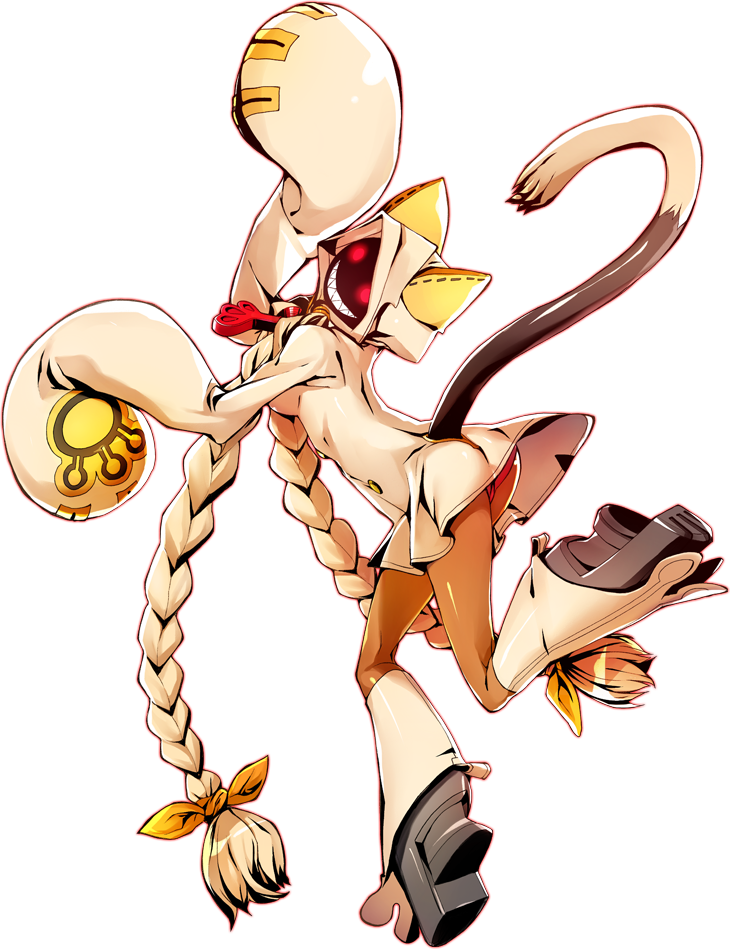

and Jump
and Jump Input icons thanks to @MagicianStuff
Happy Birthday KKCyber!
During neutral, both players are on equal footing. Hit them before they hit you.
Here's two nice moves to get you started: and Jump
: Taokaka slides forward, hitting at a deceptively long range. You can attack from a safe distance, or whiff punish. You may use this to catch the opponent landing. It hits opponents blocking standing and must be blocked low.In Blazblue, you can also dash backward or forward by pressing  or
or  , and it also works while jumping!
, and it also works while jumping!
After landing a hit, you must transition into combo. It's hard to react to the first contact, so to give us some time to process if it hit or was blocked, we release an additional series of attacks.
Once our or Jump attacks have contacted, we simply follow up with > . Don't aim forward, as these buttons have a forward variant.
Doing these moves after our initial attack gives us time to confirm the hit. If it was blocked, you can jump to cancel the animation early.
You might be too far when the slide hits, so allow Taokaka to slide for a little longer before following up.
Once we've confirmed a hit, we can now proceed with our combo. This will take some practice, but you'll be able to build some muscle memory in no time.
Here is an easy bread and butter combo that will get you started:
or Jump
> (The confirm)
> 
 ... (Combo ender, keep pressing A until opponent is falling out of range)
... (Combo ender, keep pressing A until opponent is falling out of range)
You will notice the combo ender is a command move. Make sure to practice it on it's own to be familiar with it, then practice ending the combo with it.
To block, hold the stick away from the opponent. High attacks can be blocked standing, Mid attacks can be blocked in any position, Low attacks can be blocked crouching.
By default, you want to block crouching. Mids and Lows are generally too fast to react to, by blocking low you take care of these two directions. Highs tend to be slower, so try to react and stand to block.
Blazblue will display a ! icon above your character if you were attempting to block, but got hit from the other direction. This will hint you on where to block in the future.
If a player gets in the habit of blocking, you may find an opening to throw them.
In Blazblue, throw by approaching and pressing simultaneously.
This also displays a ! icon. If the opponent tries to throw you, react and press throw to escape!
Before you continue learning, I recommend you now go and play against others and get a feel for the game. Have fun!